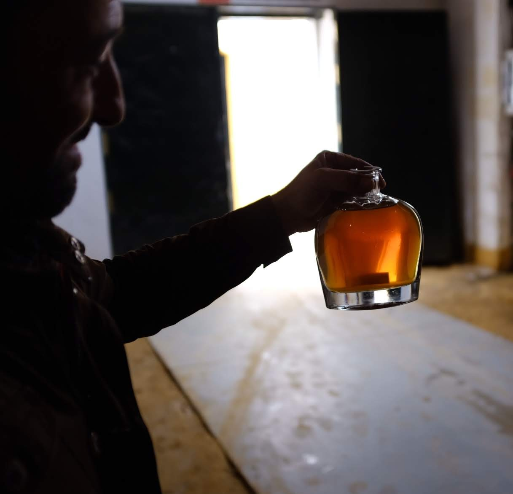
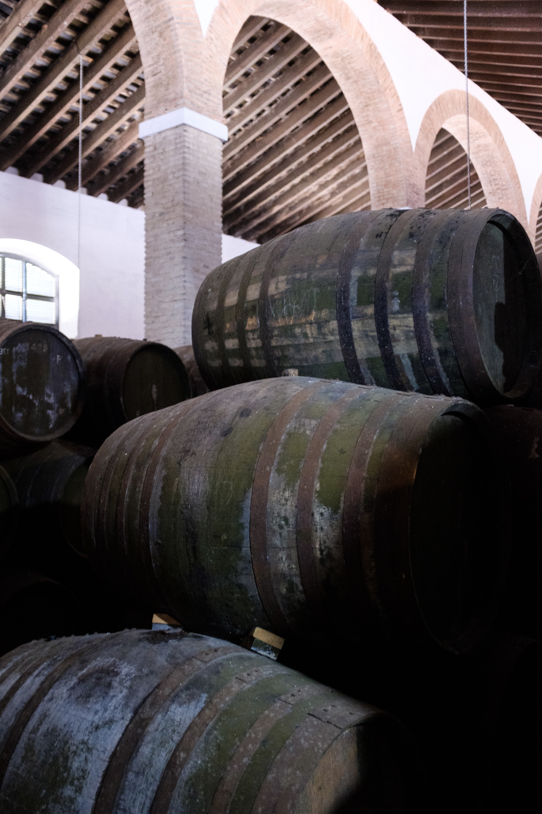
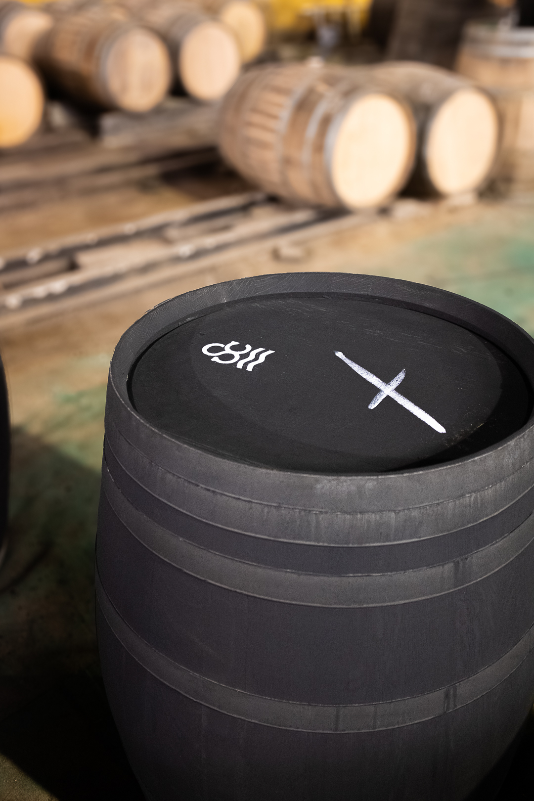
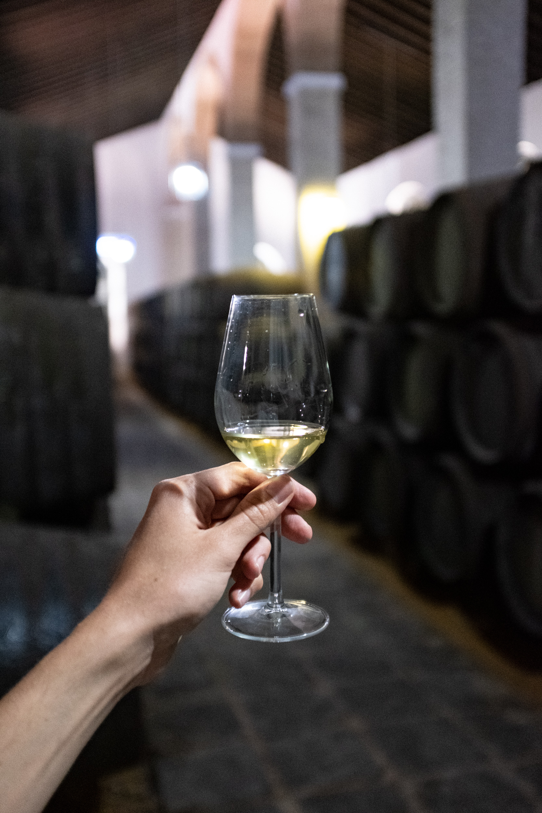

At the heart of Solera Cask is a belief in partnership — that when exceptional spirits and beers meet traditional sherry-seasoned wood, something uniquely expressive emerges. Our goal is to complement the unique character of your spirit or beer, adding a layer of depth that brings new dimension without overshadowing the soul of your creation.
We specialize in supplying distillers with mature sherry barrels from various solera systems within the sherry triangle. Backed by years of experience in the Spanish wine industry, we work directly with local bodegas to source exceptional barrels — seasoned with DO certified sherry — so you can finish your spirit or beer to the highest standard.


We provide barrels in two sizes, 225L and 500L, these are the traditional sizes that are still used in Sherry bodegas today. All our barrels are carefully selected from historic solera systems.
The true magic of solera casks lies in their seasoned wood. Over decades of use, the American oak has released its tannins, leaving the fibres fully infused with Sherry. Unlike new barrels, which impose strong tannic influence, solera casks impart only the rich, nuanced character of Sherry itself. The result is a pure, unmistakable Sherry expression in your spirit or beer, giving distillers and brewers exceptional control over the final profile. This is why historic solera casks are unmatched—and why we always recommend them over new oak.
After we acquire mature barrels, which have been aging Sherry for decades or longer, we make any necessary repairs or modifications at our in-house cooperage and give them new life. The barrels then undergo strict quality control, we perform organoleptic tests to detect any possible unwanted aromas as well as pressure tests to ensure the barrels have no leaks, weak points, or imperfections. Our goal is to provide you with the highest quality Sherry barrel for finishing your whisky, rum, tequila, vodka, gin, liqueur or beer.


Though the solera casks have been maturing Sherry for many years, we perform additional seasoning with DO certified Sherry from reputable soleras within the Sherry triangle. We season the barrels with Fino, Amontillado, Oloroso, Palo Cortado, Pedro Ximenez, and Manzanilla.
Each sherry type imparts distinct organoleptic properties, allowing you to craft precise flavor profiles for your spirits and beers.
Delicate almond and chamomile notes with bright acetaldehydic compounds. Preserves base spirit character while adding crisp minerality and perceived dryness.
Distinctive saline and sea-breeze character with green almond and subtle herbal notes. The coastal influence adds unique brine complexity and enhanced minerality.
Hazelnut, toasted almond, and herbal undertones with mild caramel. Perfect balance of biological freshness and oxidative depth.
Nutty, caramel, dark chocolate, and leather notes. High polyphenol content creates velvety mouthfeel and long, warming finishes.
Delicate citrus peel, subtle balsamic undertones, and toffee layers. Combines Amontillado finesse with Oloroso power in rare harmony.
Powerful raisin, fig, molasses, and dark honey notes. High residual sugars and caramelized compounds create lush, dessert-like profiles.
Worldwide delivery from Jerez de la Frontera, Spain, to your facility.
Fifty 225L barrels fit perfectly in a 20-foot container, providing optimal shipping economies for full loads.
Regular shipping routes to all major distilling and brewing regions worldwide with established logistics partners.
All necessary export documentation and certifications for smooth customs clearance and immediate use.
Ready to elevate your spirits or beer? Connect with us for personalized recommendations and sherry barrel solutions.